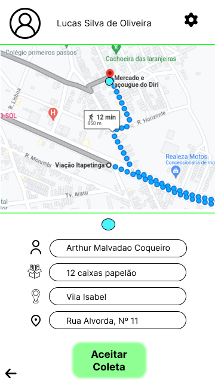
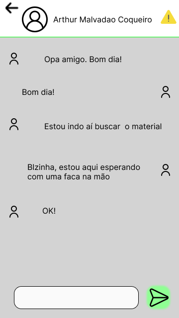
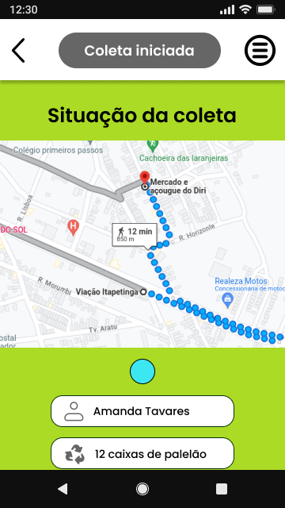
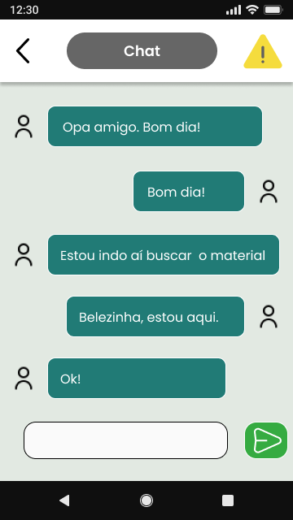
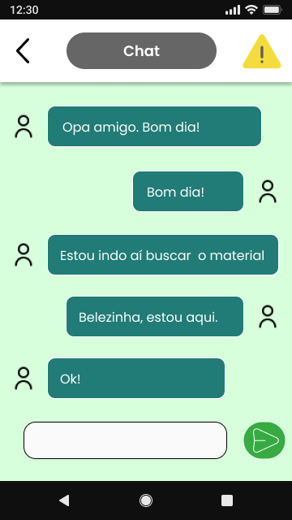

ReciclaITA
Conectando cidadãos e catadores para otimizar a logística de resíduos recicláveis

Sobre
O Recicla-ITA é uma solução digital desenvolvida por estudantes da graduação em SI do IF Baiano Campus Itapetinga-BA, em parceria com a 2º Regional da Defensoria Pública da Bahia, programa Mãos que Reciclam e o líder das cooperativas de catadores de Itapetinga-BA. O objetivo é otimizar a logística de materiais recicláveis, conectando cidadãos e catadores para promover uma economia circular eficiente e sustentável.
A proposta consiste em um aplicativo móvel para os cidadãos e catadores: enquanto os cidadãos realizam o agendamento de coletas, os catadores gerenciam as retiradas nos locais indicados. Complementando o projeto, o sistema conta com um dashboard administrativo para que a Defensoria Pública possa gerenciar o fluxo e acompanhar métricas ambientais.
Entrei no Recicla-ITA em fase estratégica de evolução, onde o projeto já havia passado por uma rodada inicial de validação com Defensoria e com o líder das cooperativas. Atuei como Product Designer e Desenvolvedor Front-end, sendo responsável pela evolução do protótipo, focando na usabilidade e acessibilidade da interface. Por outro lado, trabalhei na construção do front-end do dashboard administrativo, garantindo uma interface funcional, responsiva e orientada a dados.
Status: O projeto encontra-se em fase avançada de desenvolvimento, com foco na futura implementação e validação em Itapetinga-BA.

Desafio
O maior desafio deste projeto foi transpor a barreira da exclusão digital e do baixo letramento. O público-alvo é formado por catadores de materiais recicláveis, em sua maioria idosos e pessoas com baixa escolaridade ou analfabetismo funcional.
Desenvolver uma interface para este perfil exigiu olhar além dos padrões convencionais de UI. Foi preciso resolver questões como:
- Dificuldade de leitura e interpretação
- Baixa familiaridade tecnológica
- Contexto social
Solução
Para enfrentar esses desafios, a solução foi fundamentada em pesquisa metodológica e no design inclusivo. A abordagem inclui:
- Fundamentação científica: Revisão sistemática de literatura focada em acessibilidade para usuários de baixo letramento. Isso permitiu identificar padrões de sucesso, como uso de rótulos claros, tipografia ampliada, alto contraste e, a substituição de instruções textuais por ícones intuitivos.
- Prototipagem centrada no usuário: No Figma, foram desenvolvidos interfaces com fluxos simplificados, evitando menus complexos e telas intermediárias que pudessem causar desorientação.
- Validação estratégica: O protótipo foi validado pela coordenação do programa Mão que Reciclam e com o líder das cooperativas de catadores. Esse feedback foi crucial para ajustar requisitos de software e garantir que o dashboard e o aplicativo atendessem às necessidades reais do dia a dia da coleta.
Processo de Design
1. Análise de requisitos
Estudo da base teórica sobre acessibilidade para idosos e analfabetos funcionais, utilizando os resultados das pesquisas inciais como guia para as soluções de design.
2. Prototipagem e evolução de interface
Reestruturação completa do MVP, passando dos wireframes até a interface final de alta fidelidade.
3. Teste de conformidade
Rodadas de validação com stakeholders para ajustes de interface.
4. Desenvolvimento do sistema
Do protótipo ao código.
Wireframes de baixa fidelidade




Wireframes de média fidelidade




Protótipo de alta fidelidade
Aplicativo dos catadores



Aplicativo dos cidadãos


Dashboard Administrativo


Gostou deste projeto?
Vamos conversar sobre como posso ajudar no seu próximo projeto!
Entre em contato